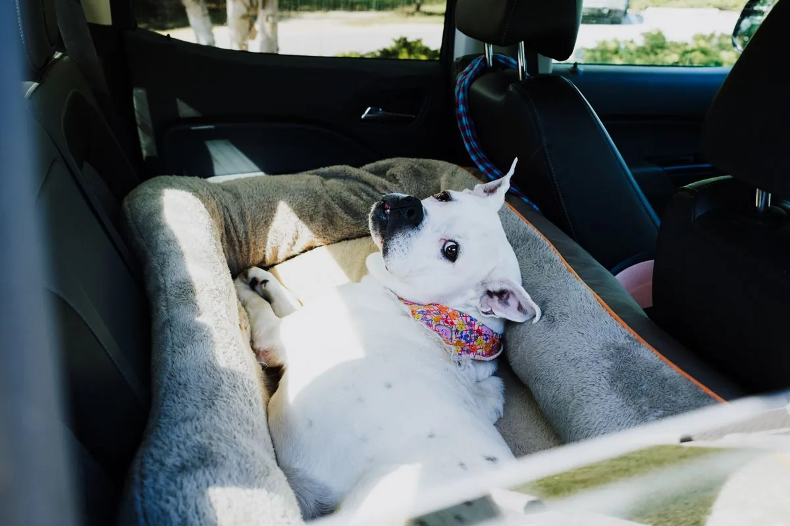

Du lịch cùng chó mèo: chuẩn bị và an toàn khi di chuyển
Có nên mang chó mèo theo khi đi du lịch không? Câu trả lời không phải lúc nào cũng là có. Với một số con vật, chuyến đi là niềm vui — được đi cùng chủ, được khám phá nơi mới. Với những con khác, di chuyển là một trải nghiệm đầy căng thẳng: tiếng ồn lạ, mùi lạ, lồng vận chuyển chật chội, say xe, sợ độ cao trong khoang máy bay. Bài viết này giúp bạn quyết định xem có nên mang pet theo hay không, và nếu mang theo thì chuẩn bị như thế nào cho an toàn — dựa trên tờ thông tin "Traveling With Your Pet" của Hiệp hội Thú y Hoa Kỳ (AVMA) và hướng dẫn nuôi thú cưng của AVMA. Mọi quy định về giấy tờ, hãng bay và điểm đến trong bài đều cần kiểm tra lại trước chuyến đi, vì quy định có thể thay đổi theo thời gian và theo từng hãng, từng địa phương.
Bước đầu tiên: có nên mang pet theo không
Trước khi đặt vé hay lên lịch trình, AVMA khuyên bạn nên dừng lại và tự hỏi: chuyến đi này có thật sự phù hợp với pet của mình không? Một số pet không hợp đi du lịch vì lý do sức khỏe, chấn thương, tính khí hay các vấn đề khác. Ví dụ, những giống chó mèo mũi ngắn như chó Pug hay mèo Ba Tư dễ bị quá nóng và khó thở khi đi máy bay, nên việc mang chúng theo bằng đường hàng không cần cân nhắc rất kỹ. Pet đang ốm, vừa phẫu thuật, hay rất sợ tiếng ồn và chỗ đông người cũng có thể không chịu nổi một chuyến đi dài.
Nếu pet của bạn thuộc nhóm không hợp đi du lịch, và chuyến đi không bắt buộc phải mang pet theo — ví dụ bạn đi nghỉ dưỡng hay về quê thăm gia đình — AVMA gợi ý bạn cân nhắc các lựa chọn khác, như thuê người trông pet đáng tin cậy tại nhà, hoặc gửi pet ở cơ sở lưu trú cho thú cưng mà bác sĩ thú y giới thiệu. Những lựa chọn này đôi khi tốt hơn cho pet so với việc bắt pet chịu đựng một chuyến đi dài và căng thẳng.
Ngược lại, nếu bạn buộc phải mang pet theo — ví dụ chuyển nhà sang thành phố khác hay sang nước khác — thì hãy nói chuyện với bác sĩ thú y về cách làm cho chuyến đi an toàn, thoải mái và thành công nhất có thể cho pet của bạn. Bác sĩ thú y là người hiểu rõ tình trạng sức khỏe của pet nhất và có thể tư vấn cụ thể cho từng con vật.
Điểm đến cũng ảnh hưởng tới quyết định này. Đi du lịch liên bang hay quốc tế có thể cần những chuẩn bị bắt đầu từ 6 tháng trở lên, vì có những xét nghiệm, giấy tờ và thời gian chờ đợi bắt buộc. Nếu bạn chỉ mới lên kế hoạch đi nước ngoài trong vòng vài tuần nữa mà chưa chuẩn bị gì cho pet, rất có thể bạn sẽ không kịp hoàn thành thủ tục — và lúc đó gửi pet ở lại là lựa chọn thực tế hơn.
Chuẩn bị sớm: khám thú y, giấy tờ và nhận diện
Khám thú y trước chuyến đi
AVMA khuyên bạn nên đặt lịch khám thú y trước chuyến đi để chắc chắn pet đủ khỏe mạnh để di chuyển và đã được bảo vệ trước các bệnh thường gặp ở nơi bạn sẽ tới. Trong buổi khám này, hãy hỏi bác sĩ thú y về phòng ngừa bọ chét, ve và giun tim, đồng thời đảm bảo vắc-xin dại của pet vẫn còn hiệu lực. Bác sĩ thú y cũng có thể tư vấn thêm về những loại vắc-xin khác có thể cần thiết cho khu vực bạn sẽ đến, vì bệnh thường gặp ở mỗi nơi là khác nhau.
Đây cũng là dịp để bạn hỏi bác sĩ thú y về những tình huống cụ thể của pet mình: pet có bị say xe không, pet có cần thuốc gì trong chuyến đi không, pet có bệnh nền nào khiến việc di chuyển trở nên nguy hiểm không. Đừng đợi tới sát ngày đi mới hỏi, vì có những việc cần thời gian chuẩn bị, ví dụ làm quen với lồng vận chuyển hay điều chỉnh thuốc.
Giấy chứng nhận kiểm tra thú y
Nếu bạn đi sang tiểu bang khác hay nước khác, bạn sẽ cần Giấy chứng nhận kiểm tra thú y, tiếng Anh là Certificate of Veterinary Inspection, thường gọi tắt là CVI. Theo AVMA, giấy này phải được cấp trong vòng 10 ngày trước khi bay, hoặc thường trong vòng 30 ngày trước các chuyến đi bằng phương tiện khác. Giấy chứng nhận này phải do bác sĩ thú y được liên bang công nhận ký — không phải bác sĩ thú y nào cũng đủ điều kiện này, vì vậy hãy gọi điện hỏi trước xem bác sĩ thú y của bạn có được công nhận liên bang hay không, hoặc nhờ bác sĩ giới thiệu người có thể ký giấy cho bạn. Lưu ý: các quy định về giấy tờ trong bài này là của Hoa Kỳ; nếu bạn đi du lịch trong nước, hãy kiểm tra quy định của hãng vận chuyển Việt Nam và điểm đến trước chuyến đi.
Ngoài giấy chứng nhận kiểm tra thú y, một số nước hoặc tiểu bang còn yêu cầu xét nghiệm thêm, chẳng hạn đo hiệu giá kháng thể dại — tức là xét nghiệm máu để đo lượng kháng thể chống bệnh dại trong cơ thể pet. Những yêu cầu này khác nhau theo từng điểm đến, và có những điểm đến yêu cầu chuẩn bị từ 6 tháng trở lên. Vì vậy, hãy tìm hiểu yêu cầu của điểm đến ngay khi vừa quyết định đi, đừng để tới sát ngày mới bắt đầu làm giấy tờ.
Thẻ nhận diện và microchip
Dù đi bằng phương tiện gì, hãy đảm bảo pet có thẻ nhận diện với thông tin cập nhật và microchip đã đăng ký đầy đủ. AVMA hướng dẫn cụ thể: thẻ đeo cổ nên có tên, địa chỉ và số điện thoại của bạn, cộng thêm một thẻ du lịch ghi thông tin liên lạc tại địa phương và nơi bạn sẽ ở trong chuyến đi. Nếu pet đã được gắn microchip, hãy kiểm tra xem loại chip có đúng loại mà điểm đến yêu cầu hay không, và chắc chắn thông tin liên lạc trong hệ thống đăng ký microchip đã được cập nhật, bao gồm cả số điện thoại di động.
Microchip đặc biệt quan trọng khi đi xa, vì nếu pet bị lạc ở nơi lạ, microchip là cách chắc chắn nhất để người khác tìm được chủ của pet. Thẻ đeo cổ có thể rơi mất, nhưng microchip thì luôn ở trong cơ thể pet. Trước chuyến đi, hãy nhờ bác sĩ thú y quét kiểm tra xem microchip còn hoạt động tốt hay không.
Cho pet làm quen với lồng và dây đai trước chuyến đi
Một trong những lỗi thường gặp nhất là mua lồng vận chuyển mới vào ngày đi, nhét pet vào và mong pet ngoan ngoãn suốt chuyến đi. Với pet, chiếc lồng lạ là một nơi đáng sợ. AVMA khuyên bạn nên dành thời gian cho pet làm quen với lồng vận chuyển, dây đai hay các dụng cụ cố định khác trước chuyến đi. Hãy đặt lồng ở nhà vài ngày hoặc vài tuần trước, để cửa mở, đặt đồ chơi hay chăn quen thuộc vào bên trong, và để pet tự ra vào khám phá theo tốc độ của nó. Khi pet đã quen với lồng, chuyến đi sẽ bớt căng thẳng hơn rất nhiều.
Tương tự, nếu pet chưa quen đi xe, hãy tập cho pet đi những chuyến xe ngắn trước, tăng dần thời gian, để pet quen với cảm giác di chuyển. Cách tập dần này cũng áp dụng cho mèo: để lồng vận chuyển trong nhà, cho mèo vào ra tự do, và chỉ đóng cửa lồng trong thời gian ngắn rồi mở ra, để mèo không gắn lồng với cảm giác bị nhốt.
Đồ cần mang theo: danh sách kiểm tra trước chuyến đi
Chuẩn bị đồ cho pet cũng quan trọng như chuẩn bị đồ cho người. Theo tờ thông tin của AVMA, bạn nên mang theo những thứ sau:
- Bằng chứng đã tiêm phòng, đặc biệt là vắc-xin dại, và bản sao hồ sơ sức khỏe liên quan.
- Giấy chứng nhận kiểm tra thú y nếu đi qua ranh giới tiểu bang hay quốc tế.
- Vòng cổ, thẻ nhận diện, giấy tờ microchip, thẻ du lịch ghi nơi bạn ở trong chuyến đi, và một tấm ảnh gần đây của pet.
- Dây xích và lồng vận chuyển di động.
- Bát ăn và bát nước, đủ thức ăn cho cả chuyến đi, và nước uống dự phòng đề phòng nơi dừng chân không có nước sạch.
- Tất cả thuốc mà pet cần dùng trong chuyến đi — và đừng trông chờ sẽ mua thêm thuốc dọc đường, vì không phải nơi nào cũng có thuốc thú y.
- Bộ sơ cứu cho pet.
- Thông tin khẩn cấp: số điện thoại của bác sĩ thú y của bạn, số điện thoại đường dây nóng về ngộ độc cho thú cưng, và địa chỉ bệnh viện thú y cấp cứu 24 giờ tại điểm đến.
Ngoài danh sách trên, hãy mang theo đồ chơi hay chăn quen thuộc của pet, vì mùi quen thuộc giúp pet bình tĩnh hơn trong môi trường lạ. Với mèo, có thể mang theo một ít cát vệ sinh quen thuộc và khay vệ sinh di động nếu chuyến đi dài.
Bảng kiểm tra trước chuyến đi tự làm
| Hạng mục | Đã chuẩn bị? | Ghi chú |
|---|---|---|
| Khám thú y trước chuyến đi | ☐ | Hỏi về bọ chét, ve, giun tim, vắc-xin dại và vắc-xin theo điểm đến |
| Giấy chứng nhận kiểm tra thú y (CVI) | ☐ | Do bác sĩ thú y được liên bang công nhận ký, trong vòng 10 ngày trước khi bay hoặc 30 ngày trước chuyến đi khác |
| Yêu cầu của điểm đến | ☐ | Kiểm tra xét nghiệm thêm, thời gian cách ly, quy định nhập cảnh — chuẩn bị từ 6 tháng trước nếu đi quốc tế |
| Thẻ nhận diện + microchip | ☐ | Thông tin liên hệ cập nhật, kiểm tra chip còn hoạt động |
| Lồng vận chuyển + dây đai | ☐ | Pet đã làm quen trước, lồng đủ lớn, khóa chắc chắn |
| Đồ ăn, nước uống, thuốc | ☐ | Đủ cho cả chuyến đi, không trông chờ mua dọc đường |
| Chỗ ở cho phép nuôi pet | ☐ | Hỏi trước khách sạn, nhà nghỉ, khu cắm trại về quy định giống và kích cỡ |
| Thông tin khẩn cấp tại điểm đến | ☐ | Bệnh viện thú y cấp cứu 24 giờ, số bác sĩ thú y, đường dây nóng ngộ độc |
| Hãng bay / hãng vận chuyển | ☐ | Kiểm tra quy định về pet, giống, kích cỡ, lồng trước khi đặt vé |
Đi bằng xe ô tô
Đi bằng xe ô tô là cách di chuyển linh hoạt nhất với pet, vì bạn kiểm soát được thời gian lái và có thể dừng lại bất cứ khi nào pet cần. Nhưng đi xe cũng có những quy tắc an toàn riêng mà AVMA nhấn mạnh.
Thứ nhất, hãy cố định pet an toàn trong xe. Chó nên được đeo dây an toàn chuyên dụng gắn vào dây an toàn của xe, hoặc ngồi trong lồng đã được cố định chắc chắn. Nếu xe có túi khí, không để chó ngồi ở ghế trước. Tuyệt đối không để chó ngồi lên đùi tài xế, vì chó có thể cản trở việc lái xe và gây nguy hiểm cho cả người lẫn chó khi phanh gấp. Mèo nên được nhốt trong lồng vận chuyển, vì lồng giúp mèo thấy an toàn, ngăn mèo chui xuống dưới chân tài xế, và ngăn mèo trốn khỏi xe khi bạn mở cửa lúc dừng chân.
Thứ hai, không để chó thò đầu ra ngoài cửa sổ xe. Nhiều chó thích thò đầu ra ngoài để hóng gió, nhưng AVMA cảnh báo rằng bụi và vật lạ bay vào có thể làm tổn thương mắt, tai, mũi và miệng của chó. Hãy mở cửa sổ hé một chút cho thoáng khí, nhưng không đủ rộng để chó thò đầu ra ngoài.
Thứ ba, tuyệt đối không bao giờ để pet một mình trong xe đang đỗ. Đây là quy tắc mà AVMA lặp lại nhiều lần trong tờ thông tin, vì xe đỗ dưới nắng nóng lên rất nhanh và pet có thể bị sốc nhiệt chỉ trong vài phút. Ngay cả khi bạn chỉ rời xe "một lát" để mua đồ hay đi vệ sinh, cũng không được để pet ở lại trong xe.
Thứ tư, với chuyến đi dài, hãy cho pet ăn uống từng ít một và dừng xe mỗi 2 giờ để chó vận động và đi vệ sinh. Khi cho chó ra ngoài xe ở điểm dừng, hãy chắc chắn chó đang đeo vòng cổ, thẻ nhận diện và dây xích. Với mèo, tốt nhất là không thả mèo ra ngoài xe ở điểm dừng lạ, vì mèo dễ hoảng sợ và chạy mất — hãy để mèo ở trong lồng và chỉ mở lồng khi xe đã dừng hẳn ở nơi an toàn, kín đáo.
Nếu pet của bạn bị say xe, hãy nói với bác sĩ thú y trước chuyến đi. Tùy vào tình trạng sức khỏe của pet, bác sĩ thú y có thể kê thuốc giúp pet thoải mái hơn trong những chuyến đi dài. Bài viết này không kê tên thuốc hay liều dùng cụ thể — mọi thuốc men cho pet đều phải do bác sĩ thú y quyết định sau khi khám trực tiếp.
Đi bằng máy bay
Đi máy bay là hình thức di chuyển phức tạp nhất với pet, và cũng là hình thức có nhiều quy định nhất. Dưới đây là những điểm chính trong tờ thông tin của AVMA.
Ai được bay và lồng bay phải như thế nào
Luật liên bang của Hoa Kỳ yêu cầu chó và mèo đi máy bay phải ít nhất 8 tuần tuổi và đã cai sữa ít nhất 5 ngày trước khi bay. Đây là quy định tối thiểu; từng hãng hàng không có thể có quy định riêng chặt chẽ hơn, vì vậy hãy kiểm tra với hãng bay trước khi đặt vé.
Lồng vận chuyển dùng khi bay phải đáp ứng những tiêu chuẩn sau:
- Đủ lớn để pet đứng mà đầu không chạm đỉnh lồng, ngồi thẳng, xoay người và nằm xuống thoải mái. Giống chó mèo mũi ngắn cần lồng lớn hơn một cỡ so với bình thường.
- Vỏ cứng, chắc chắn, không có phần nhô ra bên trong có thể làm pet bị thương.
- Có khóa lò xo an toàn và tay cầm chắc chắn.
- Đáy kín, không rò rỉ, có lót vật liệu thấm hút đầy đủ.
- Thông gió đầy đủ ít nhất 3 mặt đối với bay nội địa và 4 mặt đối với bay quốc tế, để luồng không khí không bị cản trở.
- Dán nhãn rõ ràng với tên, địa chỉ nhà, số điện thoại nhà và thông tin liên lạc tại điểm đến của bạn, kèm nhãn "Live Animals" và mũi tên chỉ hướng đặt lồng đúng chiều.
AVMA lưu ý rằng lồng vận chuyển bị hỏng là nguyên nhân thường gặp nhất khiến pet trốn thoát hoặc bị thương khi đi máy bay. Vì vậy, trước chuyến bay, hãy kiểm tra kỹ lồng: khóa có chắc không, bản lề có lỏng không, đáy có nứt không. Đừng dùng lồng đã cũ, đã nứt hay khóa đã lỏng.
Đặt vé và chuẩn bị trước ngày bay
Hãy kiểm tra chính sách vận chuyển pet của hãng hàng không trước khi đặt vé, vì mỗi hãng có quy định khác nhau về giống, kích cỡ, loại lồng và phí vận chuyển. Nếu pet của bạn sẽ bay trong khoang hành lý thay vì khoang hành khách, hãy hỏi hãng bay xem có cần giấy chứng nhận sức khỏe và khả năng thích nghi với môi trường hay không — giấy này cho biết pet đã sẵn sàng cho chuyến bay và nêu rõ giới hạn về nhiệt độ di chuyển chấp nhận được, và cần được bác sĩ thú y ký trong vòng 10 ngày trước ngày bay dự kiến.
AVMA khuyên bạn nên đặt vé bay thẳng và tránh quá cảnh cũng như các ngày lễ đông đúc, để giảm thời gian pet phải ở trong môi trường sân bay ồn ào. Về giờ bay, trong những tháng thời tiết nóng, hãy chọn chuyến bay sáng sớm hoặc tối muộn khi nhiệt độ mát hơn; trong những tháng lạnh, hãy chọn chuyến bay buổi chiều khi nhiệt độ ấm hơn. Và hãy xác nhận lại lịch bay vào ngày hôm trước khi đi, để chắc chắn không có thay đổi bất ngờ về chuyến bay.
Một điểm quan trọng khác: hãy hỏi bác sĩ thú y trước khi cho pet dùng bất kỳ loại thuốc an thần hay thuốc an thần nhẹ nào khi bay. Theo AVMA, những loại thuốc này có thể làm tăng nguy cơ về tim và hô hấp, và nhiều hãng hàng không không cho phép dùng thuốc an thần cho pet khi bay. Bác sĩ thú y có thể xác định xem việc dùng thuốc an thần có phù hợp với pet của bạn hay không, dựa trên đánh giá cẩn thận từng trường hợp. Bài viết này không nêu tên thuốc hay liều dùng — mọi quyết định về thuốc đều thuộc về bác sĩ thú y.
Trong ngày bay
Vào ngày bay, hãy cho pet vận động trước khi vào sân bay nếu phù hợp, sau đó tự tay đặt pet vào lồng vận chuyển và khóa lồng chắc chắn. Mang theo ảnh và hồ sơ sức khỏe của pet bên mình để dễ nhận diện nếu có sự cố. Khi lên máy bay, hãy báo cho tiếp viên hàng không biết rằng pet của bạn cũng đang ở trên máy bay.
Nếu pet của bạn bay trong khoang hành khách cùng bạn, AVMA khuyên bạn nên làm thủ tục check-in càng muộn càng tốt để giảm thời gian pet phải ở trong nhà ga đông đúc. Trước khi qua cửa kiểm tra an ninh, hãy lấy pet ra khỏi lồng vận chuyển ngay trước khi đưa lồng qua máy quét X-quang — tuyệt đối không để pet ở trong lồng khi lồng đi qua máy quét. Sau khi qua cửa kiểm tra, hãy lấy lại lồng, đưa pet ra khỏi băng chuyền tới khu vực yên tĩnh gần đó, và cho pet vào lại lồng ngay lập tức.
Nếu pet của bạn không bay trong khoang hành khách, hãy đón pet ngay khi tới điểm đến, đừng để pet chờ lâu trong khu vực hành lý.
Đi bằng xe buýt và tàu hỏa
Đi bằng xe buýt và tàu hỏa có nhiều hạn chế hơn đi xe ô tô hay máy bay. Theo AVMA, hầu hết các tiểu bang cấm động vật đi xe buýt, ngoại trừ chó hỗ trợ cho người khuyết tật. Tàu hỏa có quy định riêng tùy theo từng hãng — một số hãng cho phép mèo hay chó nhỏ đi cùng trong những điều kiện nhất định, một số hãng thì không. Vì vậy, nếu bạn định đi bằng xe buýt hay tàu hỏa cùng pet, hãy kiểm tra trước với hãng vận chuyển tại địa phương để biết quy định hiện hành, thay vì mặc định là được mang pet theo.
Ở lại điểm đến: giữ thói quen và kiểm tra sức khỏe hằng ngày
Khi tới nơi, công việc chăm sóc pet vẫn chưa xong. AVMA khuyên bạn nên kiểm tra sức khỏe pet hằng ngày trong suốt chuyến đi, vì ở môi trường lạ, khẩu vị, năng lượng và hành vi của pet có thể thay đổi. Hãy cố gắng giữ thói quen ăn uống và giờ giấc đi vệ sinh như ở nhà, để pet thấy quen thuộc hơn.
Nếu bạn ở khách sạn hay nhà nghỉ, hãy hỏi trước xem nơi đó có cho phép nuôi pet không, có giới hạn về giống hay kích cỡ không, có yêu cầu giấy tờ gì không, và có tiện ích gì cho pet không. Nếu ở nhà bạn bè hay người thân dọc đường, hãy hỏi trước xem pet của bạn có được chào đón hay không. Nếu pet phải ở một mình trong phòng khách sạn, hãy treo biển "Do Not Disturb" ngoài cửa và báo cho nhân viên dọn phòng và lễ tân biết.
Nếu bạn lo lắng về bất kỳ thay đổi nào về thể chất hay hành vi của pet trong chuyến đi, hãy tìm bác sĩ thú y tại địa phương để khám. Đừng đợi tới khi về nhà mới đi khám, vì có những vấn đề cần xử lý sớm. Thông tin khẩn cấp mà bạn đã chuẩn bị trước chuyến đi — số điện thoại bác sĩ thú y, bệnh viện thú y cấp cứu 24 giờ tại điểm đến — sẽ rất hữu ích trong những lúc này.
Khi nào nên để pet ở nhà thay vì mang theo
Sau khi đọc hết bài, bạn có thể thấy mang pet đi du lịch là một việc cần nhiều chuẩn bị. Có những chuyến đi mà mang pet theo là lựa chọn tốt, và có những chuyến đi mà để pet ở nhà mới là lựa chọn tốt hơn cho pet. Hãy cân nhắc để pet ở nhà khi: pet đang ốm hay vừa phẫu thuật; pet quá già hay quá nhỏ; pet rất sợ tiếng ồn, sợ chỗ đông người hay sợ di chuyển; chuyến đi quá ngắn so với thời gian và công sức chuẩn bị; hoặc điểm đến không cho phép nuôi pet và bạn không có chỗ gửi pet an toàn tại điểm đến.
Nếu quyết định để pet ở nhà, hãy chọn người trông pet đáng tin cậy hoặc cơ sở lưu trú mà bác sĩ thú y giới thiệu, và để lại đầy đủ thông tin: lịch ăn, thuốc đang dùng, số điện thoại bác sĩ thú y, và dấu hiệu nào cần đưa pet đi khám ngay. Một pet được chăm sóc tốt ở nhà đôi khi hạnh phúc hơn nhiều so với một pet bị mang theo trong một chuyến đi dài và căng thẳng.
Kết luận
Du lịch cùng chó mèo có thể là một trải nghiệm tuyệt vời, nhưng chỉ khi bạn chuẩn bị kỹ càng. Tóm lại, hãy nhớ những điểm chính sau: cân nhắc xem pet có hợp đi du lịch không, đặc biệt lưu ý giống mũi ngắn và pet đang ốm; chuẩn bị sớm, vì thủ tục đi liên bang hay quốc tế có thể cần từ 6 tháng trở lên; khám thú y trước chuyến đi, đảm bảo vắc-xin dại còn hiệu lực và xin Giấy chứng nhận kiểm tra thú y trong vòng 10 ngày trước khi bay hoặc 30 ngày trước chuyến đi khác; đảm bảo pet có thẻ nhận diện và microchip với thông tin cập nhật; cho pet làm quen với lồng và dây đai trước chuyến đi; đi xe thì cố định pet an toàn, không để chó thò đầu ra ngoài cửa sổ, không bao giờ để pet một mình trong xe đang đỗ, dừng mỗi 2 giờ; đi máy bay thì dùng lồng đạt chuẩn, đặt vé bay thẳng, hỏi bác sĩ thú y trước khi dùng bất kỳ thuốc an thần nào; và kiểm tra quy định của hãng bay, hãng vận chuyển và điểm đến trước khi đặt vé, vì quy định khác nhau theo từng hãng và có thể thay đổi. Chuẩn bị kỹ là cách tốt nhất để cả bạn và pet đều có một chuyến đi an toàn và thoải mái.

Nguồn tham khảo
- Hiệp hội Thú y Hoa Kỳ (AVMA) — Traveling With Your Pet (tờ thông tin, 2023). https://ebusiness.avma.org/files/productdownloads/mcm-client-brochures-travel-with-pet-2023.pdf
- Hiệp hội Thú y Hoa Kỳ (AVMA) — Pet Ownership Guidelines. https://www.avma.org/resources-tools/avma-policies/pet-ownership-guidelines